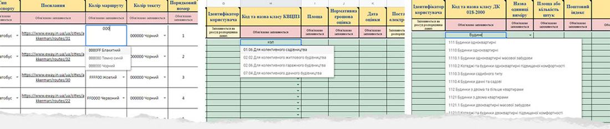
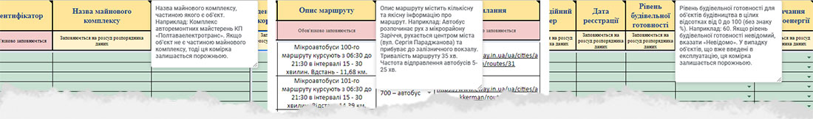
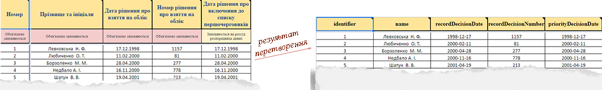
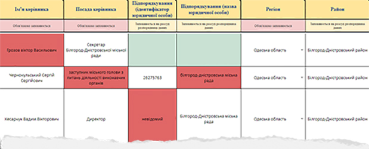
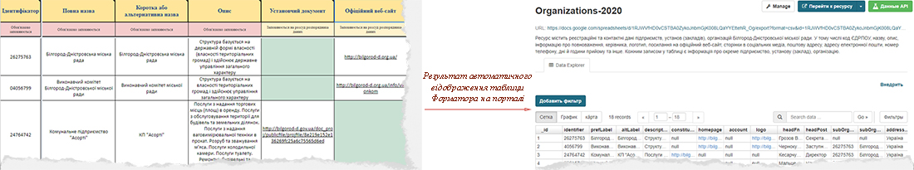

ПРО ВСЕ, ЩО СТОСУЄТЬСЯ ФОРМАТОРІВ
Незважаючи на стандарти, що були підготовлені Мінцифрою за підтримки проекту TAPAS у вигляді «Рекомендацій для оприлюднення наборів відкритих даних», проблема стосовно формування та публікації цих наборів на Єдиному державному порталі все ще залишається надзвичайно актуальною для переважної більшості органів місцевого самоврядування (ОМС). Так, в процесі оприлюднення понад 100 ресурсів в 74-х наборах даних, задекларованих Постановою КМУ № 835, представникам ОМС, незважаючи на вищеназвані, дійсно корисні рекомендації, постійно доводиться стикатися з рутиною наступних дій:
Безумовно, вищеназвана обставина дуже стримує так необхідне нам систематичне і всеосяжне оприлюднення відкритих даних державними структурами та органами місцевого самоврядування. Це, в свою чергу, потребує хоча б часткової автоматизації всіх перерахованих вище дій, яка, зокрема, і реалізована за рахунок даної програми «Менеджер форматорів» та застосовуваних в ній Форматорів у вигляді Google таблиць.
2. Терміни, що використовуються у програмі «Менеджер форматорів» та в інструкції до неї
Набір даних - сукупність, об'єднаної за певною ознакою інформації, котра складається з ресурсів у вигляді посилань або файлів з цією інформацією та з додаткових файлів, що ідентифікують даний набір і його ресурси для пересічних користувачів.
Ресурси - безпосередня інформація, заради якої був створений той чи інший набір даних. Кожен набір даних може містити один або декілька ресурсів, представлених в ньому у вигляді посилань або файлів з відповідною інформацією доступною для пересічних користувачів, зокрема, і через API.
API (інтерфейс прикладного програмування) - сукупність функцій, які використовуються розробниками ПЗ і просунутими користувачами для доступу до ресурсів наборів даних з метою здійснення тих чи інших вибірок, як при створенні програмних (Web) додатків, так і при проведенні аналітичних досліджень.
Паспорт набору даних - в контексті даної програми є окремим файлом, де розміщені докладні відомості про призначення, склад ресурсів, нормативно-правове обґрунтування та ключові слова того чи іншого набору даних. Всі паспорти для наборів можуть формуватися в програмі автоматично а, потім переноситися на Єдиний державний портал за допомогою відповідної команди програми при створенні обраних користувачем наборів даних.
Описи ресурсів - в контексті цієї програми є окремими файлами, де вказуються назви ресурсів, їх призначення та формати. Описи всіх ресурсів в програмі можуть формуватися автоматично і, потім переноситься на Єдиний державний портал з допомогою відповідної команди програми при публікації обраних користувачем ресурсів.
Структура ресурсів - в контексті даної програми є окремим файлом, де для всіх ресурсів, які складають той чи інший набір даних, зібрані докладні відомості про назву їх колонок (полів), зміст, розміщуваної в них інформації, формат цієї інформації, вимоги щодо обов'язковості заповнення та умови валідації внесених в колонки значень. Цей файл може бути украй затребуваний, як пересічними користувачами при вивченні ними відповідних наборів даних, так і розробниками в процесі створення ПЗ що використовує дані з того чи іншого ресурсу. Тому, вищезгаданий файл в даній програмі формується автоматично при створенні наборів даних на Єдиному державному порталі.
Форматори - в контексті цієї програми є спеціальними Google документами (таблицями з декількома листами), котрі були сформовані на основі вже існуючих шаблонів таблиць, розроблених для стандартизації відображення ресурсів і описаних в офіційних Рекомендаціях щодо оприлюднення наборів даних. Головним призначенням Форматорів є розширення функціональності вищеназваних стандартних шаблонів таблиць, яке з одного боку дозволяє усунути типові помилки при внесенні даних в таблиці, а з іншого боку забезпечує доповнення цих даних заздалегідь асоційованої або один раз введеної інформацією. Отже, завдяки використанню Форматорів для тих чи інших наборів даних з боку розпорядників інформації:
Менеджер форматорів - програма, яка по відношенню до розпорядників інформації дозволяє:
3. Коротко про основні переваги Форматорів
За рахунок використання довідників та стандартних можливостей всіх електронних таблиць скорочується обсяг введення початкової інформації, а також знижується ймовірність виникнення описок і помилок, пов'язаних з занесенням одних і тих же даних в різних варіантах. Також, завдяки використанню довідників, можна не звертаючись до сторонніх нормативів та законодавчих актів швидко і легко вибрати потрібну Вам інформацію і, тут же ввести її в необхідну комірку таблиці.

Малюнок 1.1. Приклад використання довідників в Форматорах
У разі, якщо з заголовка колонки в таблиці того або іншого Форматору Вам не зрозуміло, що саме заноситься в цю колонку, Ви завжди можете навести стрілку мишки на цей заголовок і отримати відповідну, вичерпну підказку.

Малюнок 1.2. Приклад підказок для заголовків колонок Форматорів
Якщо ті чи інші комірки в заповнених Вами рядках залишаться порожніми, то Вам вже не потрібно буде, слідуючи міжнародним вимогам, вручну набирати для кожної з цих комірок значення "null". Форматори зроблять це за Вас автоматично.
Малюнок 1.3. Приклад того, як порожні комірки Форматорів згодом автоматично заповнюються значенням «null»
Також автоматично Форматори замінять, введені Вами в звичному форматі значення дати на їх міжнародний стандарт ISO 8601 (рррр-мм-дд).

Малюнок 1.4. Приклад того, як введені Вами дати перетворюються зі звичного Вам формату в формат ISO 8601 (рррр-мм-дд)
У разі, якщо Ви в колонку, яка приймає тільки числа, ввели текст, або ж, не дай боже, прізвище, ім'я або по батькові Вашого керівника написали з маленької літери, то комірки з такого роду помилками Форматори завжди помітять червоним.

Малюнок 1.5. Приклад того, як комірки з введеними Вами некоректними значеннями в Форматорах автоматично позначаються червоним кольором
При редагуванні, доповненні або актуалізації даних в Форматорах, всі внесені зміни будуть тут же автоматично відображатися на відповідних ресурсах, що були Вами попередньо опубліковані на Єдиному державному порталі відкритих даних. Таким чином, Вам вже не потрібно буде оновлювати ці ресурси на порталі кожен раз після внесення в них змін. Це буде робитися відразу ж після внесення Вами змін в автоматичному режимі.

Малюнок 1.6. Приклад автоматичного відображення таблиці Форматора на порталі відкритих даних
4. Заповнення Форматорів даними розпорядників інформації
Як уже було згадано вище, кожен, сформований для того чи іншого ресурсу, Форматор є Google документом (електронною таблицею з декількома листами), який за рахунок застосування довідників та регулярних виразів істотно знижує, як обсяг даних, що вводяться, так і ймовірність виникнення в цих даних помилок. У вищезгаданий Google документ найчастіше входять такі листи:
Введення даних - цей лист в Форматорах є єдиним змінюваним листом, за допомогою якого розпорядники інформації повинні формувати відповідні таблиці (ресурси) для того чи іншого набору даних. Всі інші листи Форматорів захищені і, можуть бути змінені тільки після узгодження з розробниками цього ПЗ. Що ж стосується вищезгаданого листа «Введення даних», то салатовий колір, в який спочатку пофарбовані всі його комірки, тут використовується просто щоб свідчити, що всі ці комірки є порожніми. Коли ж в будь-яку комірку вноситься значення, то ця комірка забарвлюється в білий колір (якщо значення є коректним), або ж в червоний колір (якщо значення є неправильним).
Результуюча таблиця - лист де ті значення, які були введені розпорядниками інформації на листку «Введення даних» автоматично модифікуються відповідно до вимог міжнародних стандартів та критеріїв прописаних в офіційних Рекомендаціях для оприлюднення відкритих даних. Фактично, на цьому листку розміщені ті дані, які у вигляді відповідного ресурсу для того чи іншого набору будуть відразу ж відображені (автоматично опубліковані) на Єдиному державному порталі відкритих даних. Реальна назва даного листа в складі конкретного Форматора, як правило, співпадає з ім'ям файлу самого ресурсу, опублікованого на порталі.
Довідники - даний лист є не у всіх Форматорах, але якщо цей лист існує, то він містить переліки стандартних варіантів заповнення тих чи інших колонок в таблиці на листку «Введення даних». Наприклад, якщо в складі вищеназваної таблиці є колонка, кожна комірка якої повинна містити назву того чи іншого адміністративно-територіального регіону, то при натисканні мишкою по комірках цієї колонки повинен випадати список, де можна буде вибрати потрібний Вам регіон. Таким чином, застосування довідників мінімізує час і знижує кількість можливих помилок при введенні даних в Форматори.
З метою максимального роз'яснення розпорядникам інформації специфіки заповнення таблиці на листку «Введення даних» у всіх Форматорах існують спливаючі (при наведенні мишки) підказки, які роз'яснюють призначення кожної колонки в цьому листку і то, як ці колонки потрібно заповнювати.
Примітка: При необхідності копіювання на лист «Введення даних» будь-якої інформації, що вже існує в Ваших Excel або Libre Office Calc файлах, Ви повинні спочатку скопіювати потрібний Вам масив даних з вищеназваних сторонніх файлів за допомогою Ctrl + C, а потім вставити його в потрібне місце на листку «Введення даних» за допомогою таких команд в меню Google таблиць, як: «Редагувати» -> «Спеціальна вставка» -> «Вставити лише значення». Такі дії дозволять відразу ж виявити наявність можливих помилок у вставлених Вами на лист «Введення даних» значеннях, що буде позначено червоним кольором.